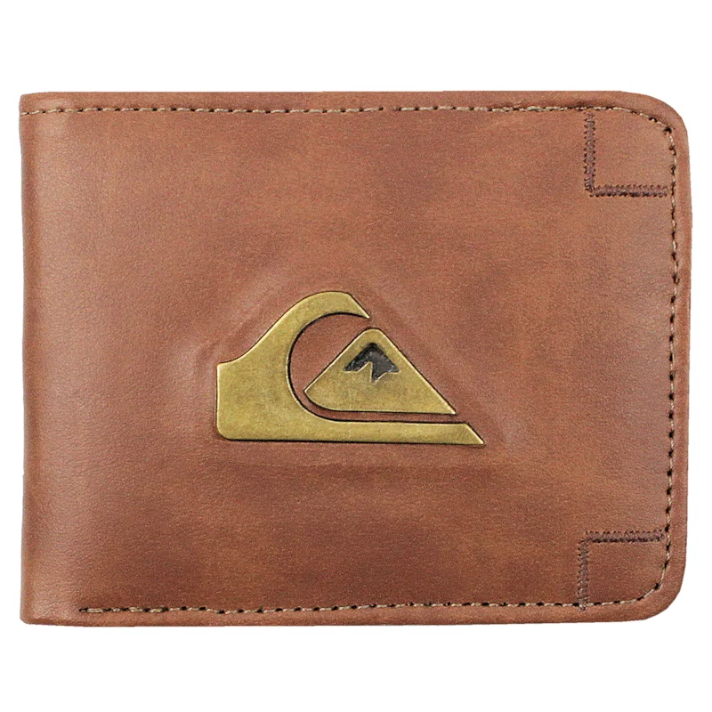

Solicitado por Jose de Sousa
jose2018@gmail.com
(63) 99200-0000
25/01/1998
Perdi esta carteira marrom na entrada da instituição, provavelmente caiu do meu bolso e foi encontrado no chão.
Carteira marrom
No dia 25 de Setembro
“Quais documentos estavam dentro da carteira?”
CNH,RG,CPF e a Carteira de estudade.